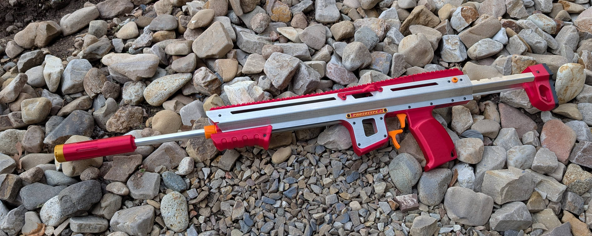
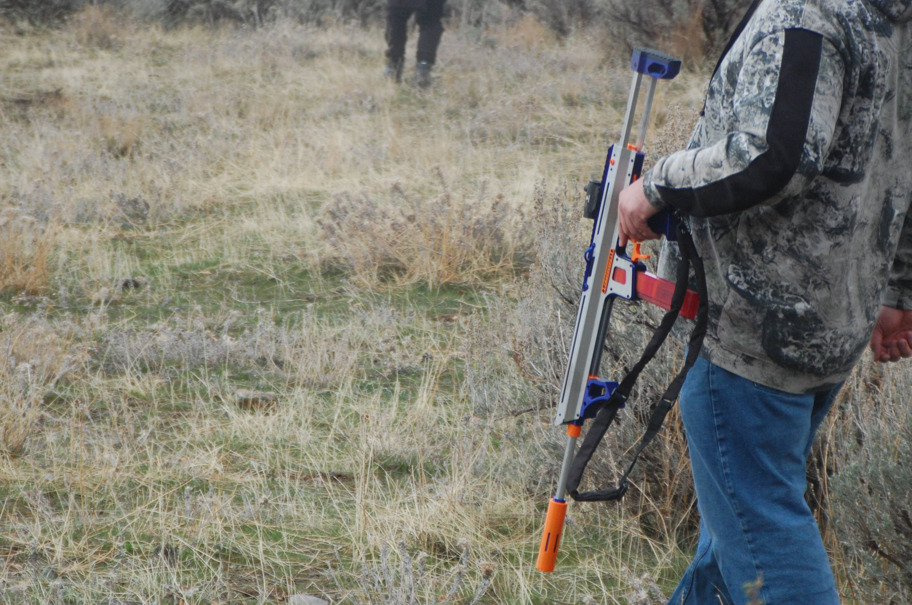
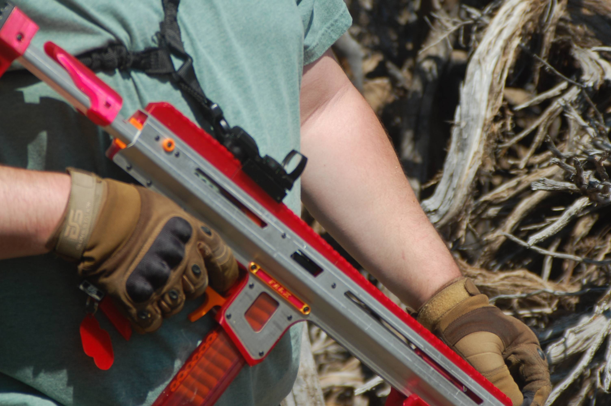

Overview
Falx was inspired by discussion on metal blasters with friends and other blaster designers- the general takeaway is that metal blasters aren't worth it, and the two prime reasons to want one are as statement pieces and for their durability. I decided that I wanted to design a metal blaster, and do it cheaper and better.
Some background: the Sabre Apex Prime and the "Guardian" Lynx are the two metal blasters I personally have handled. I have found both of those hilariously underwhelming. The Apex Prime is extremely basic inside, and feels terrible- the barrel needs its position manually set, is held in with grub screws to a gigantic barrel nut, the trigger is loose and terrible, the linear rail guiding is poorly thought out and terrible, the ergonomics are that of a ten pound poorly balanced brick... I can do better. The Guardian Lynx is just a machined version of a printable blaster, with rudimentary bearing guides that don't actually make contact with the guide surface... it doesn't do anything special, and has no real reason for use.
So, Falx. It uses two laser cut and bent pieces of sheet metal as the body of the blaster, and printed "trunnions" inside. This way, the blaster needs no other major hardware to reinforce it, like it would with a fully 3D printed design, and yet can still use the capabilities of 3D printing for more complicated geometry. It also uses laser cut and bent bars for a collapsible stock, a single bar prime setup similar to Rush, and a linear rod and bearing for a super smooth prime. The sear is torsion spring based, to minimize space needed under the plunger tube and allow for easy assembly.
Falx is very light for a blaster of its size, as due to its construction it only uses approximately 500-700g of filament depending on settings. It's extremely rigid, which makes it notably accurate. Its bent aluminum body means it's very strong and hard wearing; drops, falls, and running into obstacles are no issue. With a ram printed in TPU, it's also essentially indestructible during normal use. This means that it's the perfect loaner blaster- unfamiliar users can't really hurt it, the linear bearing means it's easy to prime, and they find it very easy to make hits. I gave this to a friend who had never Nerfed before, and he singlehandedly tagged out an extremely skilled opposing duo at mid range in under five seconds; I gave this to a local younger Nerfer who couldn't prime any other hobby pump action springer for 160 fps, and he not only could prime it but made several hits and then begged his father to buy it for him.
The other cool thing is that hardware for Falx comes in at about half the price the hardware for a Gavinfuzzy SBL2 does. The SBL2 is currently the prime choice for the Nerfer looking for a smooth-prime hard-wearing rifle-style blaster in the sub-300FPS bracket, and is a fantastic build... but is approximately $250 for hardware alone. Falx clocks in at $125 for a hardware kit, and is every bit as capable and far more durable than an SBL2.
However, this blaster does come with a unique challenge as a commercial venture- the metal plates are not standard hobby hardware, and need to be sourced in quantity to achieve good pricing. The prototype and beta builds were raw aluminum, which I find particularly attractive- you can see all the battle scars from using the blaster, which I think is pretty awesome- but we wanted anodized metal for the release version.
This design is sold exclusively with BearsWares, and Bear and I worked together with friends and other hobby vendors to find the best place to source the metal. We eventually made contact with an overseas manufacturer, and got some beautiful clear anodized Falx bodies! I'm very much looking forward to seeing how this one shakes out, as I believe it has the potential to move our hobby in interesting directions. Also, beta testers did some interesting things with the raw aluminum bodies- we had a couple cerakoted, and one done in automotive paint. It's a beautiful canvas.